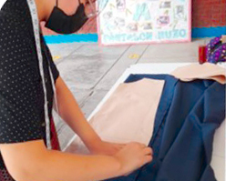
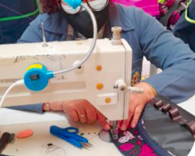

1º OPERATIVIDAD DE MÁQUINAS DE CONFECCIÓN TEXTIL: Confección de mandiles y cartucheras, utilizando eficientemente la máquina recta.
2º CONFECCIÓN DE PRENDAS DEPORTIVAS: Confección de prendas deportivas para niños, jóvenes y adultos.
3º CONFECCIÓN DE PRENDAS PARA NIÑAS: Confección de prendas de vestir para niñas (jumper, vestidos, etc.) .
4º CONFECCIÓN DE PRENDAS DE DAMAS: Confección de prendas de vestir para damas (polos de vestir, vestidos, prendas íntimas, etc.) .
|  |